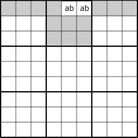
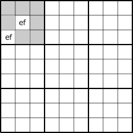
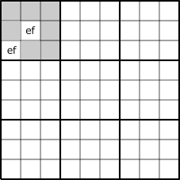

Summarizes the basics of GNPX v5 development.
Locked
(0) SuDoKu Algorithm
"Locked" is an important concept in Sudoku analysis.
<<<<<<< HEAD
=======

>>>>>>> 07256ea1153693c875215d831f8da35597c55043
Locked is a restriction that arises from the candidate digits of cells,
the number of candidate digits, and the arrangement of cells.
Candidate digits are limited to positive or negative. There are many types of Locked.
Depending on Locked, the surrounding candidate digits will be positive or negative.
(1) LockedSet
LockedSet is the simplestLocked.( =>LockedSet )
For a house, if there are n candidate digits in n cells,
the candidate digits for this cell are locked.
In the case of n=1, one digit is determined by the analysis algorithm Single
(Last Digit, Naked Single, Hidden Single).
The following figure shows the case of "two digits in two cells", which is a case of partial digits determination.
From the Sudoku solution of "determining the digitd in each cell on the board", this is one step in the solution.
In the colored cells in these figures, the digits in the cell of interest is determined negatively.

 

The following figure is a LockedSet with "3 cells and 3 digits" and "4 cells and 4 digits".
(The figure on the right is a case where some candidate digits are missing)
The locked cells/digits is confirmed positively on the Sudoku board,
digits in gray background cells are negatively confirmed.

In the following figure, the cells and digits derived from the arrangement of digits are confirmed negatively.
LockedSet When there is no confirmed positive/negative point on the Sudoku board,
In locked cells, there will be multiple digits patterns.
The puzzle cannot be solved or is not a Sudoku puzzle (there is no unique solution).
These characteristics of Locked are the same for the other types of Locked described below.
(2) Fish / GeneralLogic
Fish is a Locked that occurs in two pairs of houses.
Focusing on digit X, select N houses that contain up to N numbers of digit X (N is the degree),
and call this a BaseSet.
Assume that the Houses of BaseSet do not overlap.
Also, choose another set of N Houses to completely contain theBaseSet.
This is called aCoverSet.
The common part of BaseSet and CoverSet selected in this way is Locked.
(Note: There is also an overlap type of Locked)br>
As shown in the following figure,
elements included in CoverSet but not included in BaseSet (blue triangular elements in the figure)
are determined to be negative.
If the blue triangle element is positive, there will be a shortage of positive elements in Baseset.

Fish can be extended as follows:
- Fish size is 2~7
- BaseSet/CoverSet house can be any combination of rows, columns, and blocks.
(Franken/mutant Fish) - BaseSet/CoverSet house can be extended to digits in addition to rows, columns, and blocks. (GeneralLogic)
- BaseSet/CoverSet can be extended to overlapping sets.(EndoFin/Cannibasatics Fish)
- Finned Fish

Sudoku algorithms (many?) can be reconfigured with GeneralLogic , an extension of Fish. In other words, the Sudoku solving algorithm is based on Locked.
(3) ALS-XZ Doubly_Linked
ALS is a state in which n cells contain (n+1) digits, and nothing is determined by this alone.
When two ALSs are connected in a house different from the ALS house as shown in the following figure,
the common digits are called RCC(Restricted Common Candidate).
Consider a case where two ALSs are connected by two RCCs.
The two x, y are included in each of the two ALS, and cannot be included in one at the same time.
At this time, the two ALSs become Locked together.

(4) SDC(SueDeCoq)
SDC(SueDeCoq) is an extension of ALS-XZ (DoublyLink), in which two ALS are connected by AnLS.
This too Locked exists inside the Sudoku board.
The GNPX v5 SDC code is implemented using an algorithm using ALS/AnLS.
(Supplement: “-n” in the conditional expression corresponds to the fact that
there are n ALS connected to Stem AnLS. This makes AnLS Locked.)
It will be expanded further in future versions(v6).